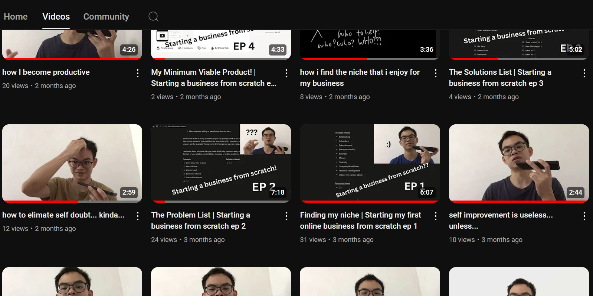

Proposal
At First
I wanted to do the first part, mastering video editing, for my GL.
But, after meeting with my LF, we realised that I unknowingly want to do more on business than the video itself.
So, we changed the project to include business as well…
Now...
I am doing
“Creating Content to generate leads for my community (in the future)”
for my GL
Before Starting The Actual Project,
I started making videos to let myself get used to talk in front of camera.
The Journey
1st Lesson
Plans:
- are for me to get started
- may most likely be very different from what I do.
- Is what I think was the right things/actions to do.
1st LF Consultation Lesson (as far as I remembered):
- I am allowed to adjust the actions and deliverables, if did not go to plan.
Week 2-3 Lessons
- When I want to teach something, either:
- I need authority, showing that I know what I am teaching.
- I show people what I do, not to say “How to” but “How I”.
- That's why I made a slight shift in content I made:
- Instead of making videos about strictly about business, because I have no credibility, I made videos about productivity/mindsets for starting the business, as I learnt them from books etc…
Week 4 Lessons
- Volume is key when starting, to get used to:
- How the platform works
- Talking in front of the camera
- The whole process of content creation
Week 5 Lessons
- Even though after making lots of videos, I was still getting around 5 views which was demoralising
- But I learnt to keep moving forward even when I’m feeling down, and never quit.
Week 6 Lessons
- Tried new style: Teaching the first principles of some of the tools used in business
- Instead of making same type of videos over time and getting little to no result, I try making small change in the type of video.
Week 7 Lessons
- At first, I thought structure, pronunciations, editing etc were important, that was why I put them in the contract.
- But what I learnt from watching tons of video about making good videos is that the 3 most important things are the Thumbnail, Title and Intro.
- I need the audience to click my video in the first place before the other parts (structure and pronunciation) can play.
- So, I started to focus solely on the things that matter: Title, Thumbnail and Intro, with structure
2nd LF Consultation Lessons:
Key Points Discussed:
- Progress so far
- Decrease the number of videos in the term break to increase quality
- Ways to share deliverables
- Showing the process in the e-portfolio
- Doesn't really matter if don't get any leads
- Learning Logs can submit all in one
What went well, What didn't go well, What I need to improve on:
- Well: I was able to upload consistently for about 2 months.
- Didn't go well: Planning can be better
- Need to Improve: Planning
Week 8 Lessons


Week 9 Lessons
- Consistent Effort, and Patience really pays off.
- Become a scientist: Try out different topic
Week 10 Lessons
- When 1 thing works, try something like it again to see whether it work.
- It was then I realised maybe the topic of Web Development was it.
- Maybe my business could be changed something related to web development…?
Week 11 Lessons
No Video because I was sick.
- Unexpected events (eg: being sick) will occur to disrupt the plan
- It is more important that I need to get back up the next week and continue the plan
Week 12 Lessons
- This is the video I posted 1 week after I was sick, and I feel that it could be better.
- I wasn't confident in its performance, but I still must post no matter how I feel.
- When I am down, and want to get back up, I should not expect the quality to be as good as the rest.
- But should focus on getting it done and improve for the next one.
Week 13 Lessons
- I reached 1000 Views!
- I was really happy that my determination have kinda paid off.
- I am really grateful to have even started this channel and see the progress.
- This video is kinda how I wanted to end my GL adventure, on a happy note! :D
Next Step/Future Plans:
- I will continue to post content.
- But, my niche changed from helping people to start a business to web development.
- Because, I do not have the credibility yet, as I haven't even started my business yet.
- I also do not really want to sell to my audience yet but help other people instead (businesses).
- I feel that people who sell to their audience may not make as “authentic” content, because they optimise for money, which as an audience, I can feel that.
- I will use the channel as credibility and leverage, for the businesses and people who need websites, that will probeably be my first business.
- And once I helped them, I will have more credibility, then I will move to the original plan of helping my audience to do what I did.
- I will know how to ACTUALLY start starting a business.